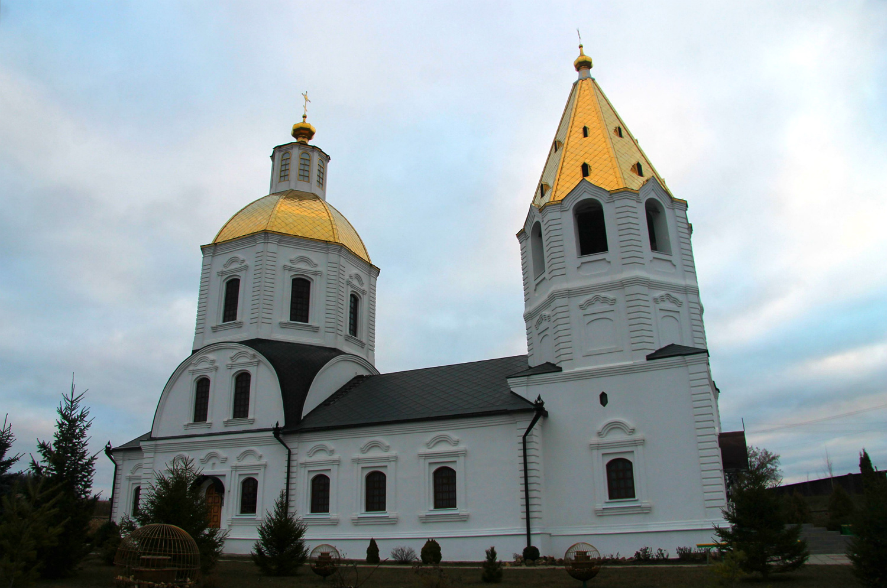
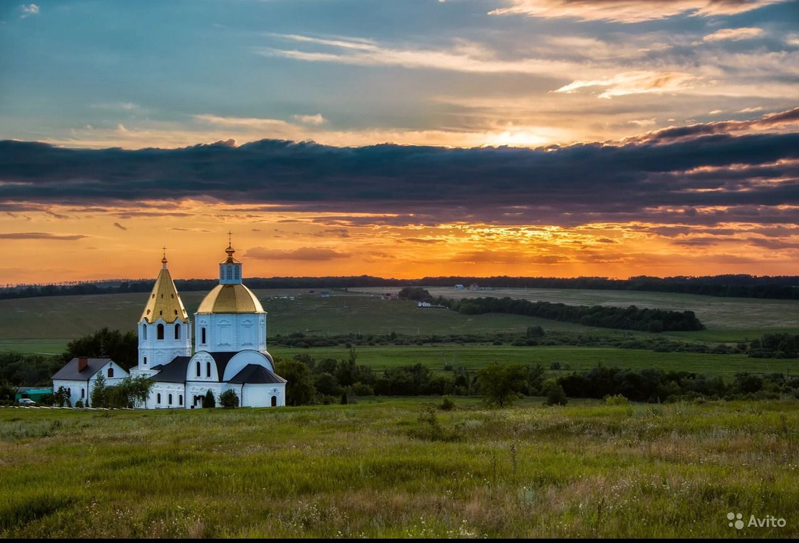
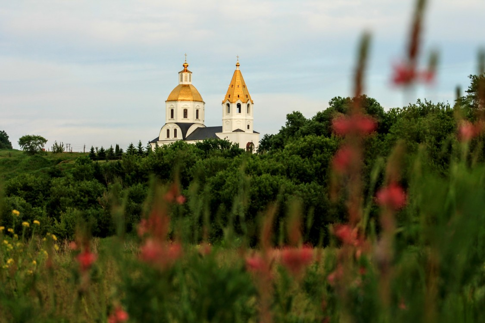
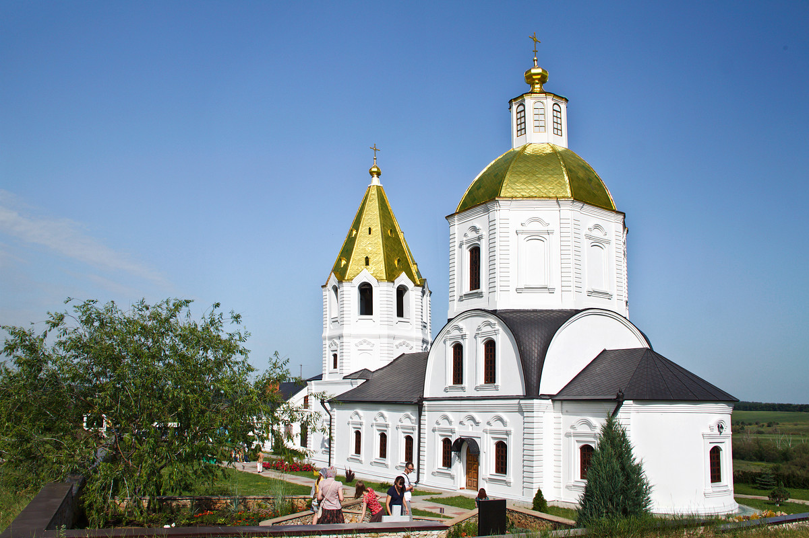
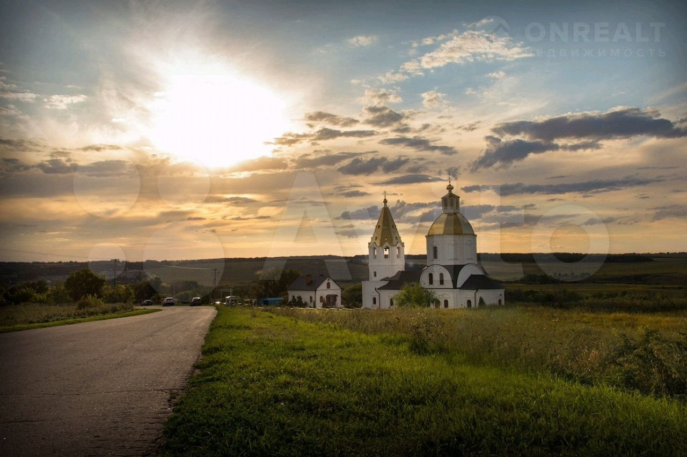
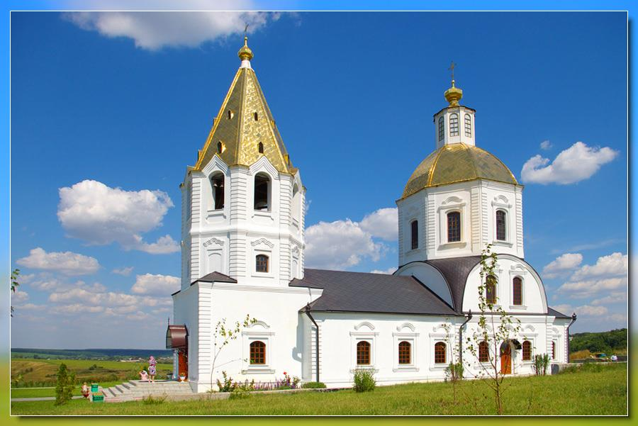
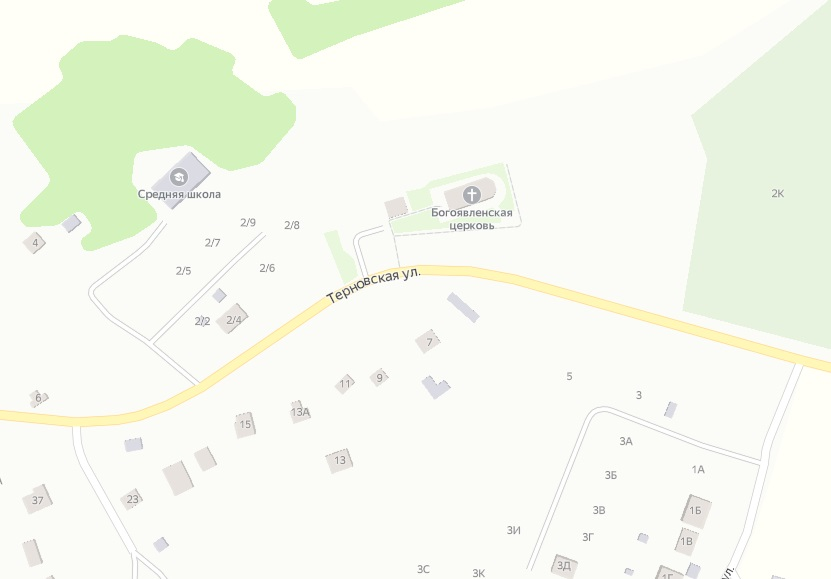

Свято-Богоявленский Храм (село Терновое)
../../
Телефон: +7 (47372) 9-72-39
E-mail: semilukskoe_blagochinie_vob@mail.ru
Сайт храма
Россия, Воронежская область, Семилукский район, село Терновое, Терновская ул., дом 2Б

Митрополия: Воронежская
Епархия: Воронежская и Лискинская
Благочиние: Семилукское
Первое упоминание: 1697 г.
Дата основания: 1769 год
Архитект. стиль: барокко
Престол: Богоявления Господня
Приделы: Димитрия Ростовского; Николая Чудотворца
Состояние: восстановлена, действующая
Реликвии и святыни храма
Чудотворная икона Божьей Матери Смоленская (Одигитрия)
Чудотворная икона Божьей Матери Казанская
Чудотворная икона Божьей Матери Владимировская
Село Терновое основано в конце ХVI века, как два поселения - Малое и Большое Терновое. В 1613 году их разорили татары. Малое исчезло совсем, а Большое стало именоваться Терновым. Места эти заселялись еще в глубокой древности, об этом свидетельствует памятник археологии эпохи бронзы, находящийся рядом с селом. До революции Терновое было родовым имением семьи Лосевых. До 1923 года село территориально входило в состав Землянского уезда Воронежской губернии.
В 1769 году было решено возвести небольшую каменную церковь на месте прежней, построенной в 1737 Построенный храм является прекрасным образцом архитектуры барокко с элементами русского средневекового зодчества.
Архиепископ Дмитрий (Самбикин) в документах середины 1880-х годов отмечал:«Церковь в селе Терновом, Землянскаго уезда, с приделами с правой стороны св. Димитрия Ростовскаго, с левой - св. Николая чудотворца, потсроена в 1769 году. Причт получает % с 1000 рублей от почетнаго потомственнаго гражданина Якова Ивановича Нечаева. В Терновом была церковь в начале XVIII века, в 1707 году при ней был священник Панкратий. Эта церковь считается приписною к Богоявленской церкви села Губарёва, хотя имеет свой причт. Прихожан 560 душ, хутора: Гудовка (в 1 версте) и Удобный».
По документам Воронежской епархии за 1900 год, в штате Богоявленской церкви числились: священник (Стефан Евграфович Петров) и псаломщик (Василий Иванович Багрянский). Церкви принадлежало 36 десятин пахотных земель. Приход насчитывал 174 двора, в которых проживало 1133 человека.
В 1918-1924 годах церковь стояла на учете в Отделе по делам музеев Главнауки Наркомпроса как наиболее ценный памятник архитектуры губернии.
Со Свято-Богоявленским храмом связано немало легенд и приданий. Местные жители рассказывают, что в этом храме, который был разрушен и осквернен еще в тридцатые годы, иногда слышалось пение, хотя не внутри ни около не было ни души. А еще говорят, что поднявшись на колокольню храма, можно было услышать звон.
Именно на эту церковь пал выбор режиссера Сергея Бондарчука во время работы над "Судьбой человека". Многим заполнились по известному фильму храмовые руины села Терновое.
12 сентября 2000 года, при проведении земляных работ, обнаружено несколько захоронений внутри храма и снаружи у южной стены, а также два склепа в двадцати метрах от алтарной стены. В указанных местах земляные работы прекращены, приняты меры по охране склепов, на месте погребения отслужена панихида. Исходя из бесед с местными жителями, учитывая мнение историков, данные местного архива и проводя аналогию с подобными захоронениями на территории других храмов, можно предположить, что захоронения внутри храма и в склепах принадлежат усопшим священнослужителям.
В 2006 году в Крещенский Сочельник здесь состоялось первое Архиерейское служение. 11 июля 2009 года Митрополит Воронежский и Борисоглебский Сергий совершил чин Великого освящения храма в честь Богоявления Господня. С декабря 2003 до июня 2004 настоятелем Богоявленского храма был Владислав Владимирович Моргун (переведен в Покровскую церковь села Кондрашкино Каширского района). Его сменил священник иерей Сергий Пирцхелия.
Церковь Указом Президента Российской Федерации № 176 от 20.02.1995 года и постановлением администрации Воронежской области N 850 от 14.08.1995 года является объектом исторического и культурного наследия федерального (общероссийского) значения. Объект № 3610066000